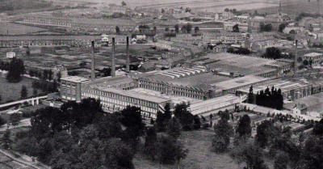

Établissements Agache
Établissements Agache
Résumé
Fondée en 1824 à Lille par Donat Agache comme simple négoce de lins, l'entreprise devient progressivement l'une des plus grandes filatures de lin et de coton du Nord de la France. Associée aux Droulers puis transmise aux fils Agache, elle s'installe durablement à Pérenchies et La Madeleine. André et Claude Saint-Léger y entre comme administrateur en 1913, après la vente de sa propre filature à la Société. La guerre de 1914-1918 détruit quasi totalement les usines, mais la reconstruction est menée avec énergie — notamment grâce à Marguerite Saint-Léger, qui joue un rôle central dans le relèvement de Pérenchies. En 1928, la Société Agache Fils compte 6 sites de production, emploie près de 5 000 ouvriers, exploite plus de 90 000 broches et plusieurs tissages :
- Pérenchies — filature de lin + tissage (siège historique)
- La Madeleine (Berkem) — filature de lin + coton
- Seclin — filature
- Armentières — tissage
- Pont-de-Nieppe — blanchisserie et apprêts
- Origgio (Milan, Italie) — filature de chanvre (Société Lombarda Lino e Canapa)
Elle s'illustre autant par sa puissance industrielle que par ses œuvres sociales (logements ouvriers, crèche, maison de retraite, instituts ménagers). Les usines Agache fermèrent définitivement en 1990
